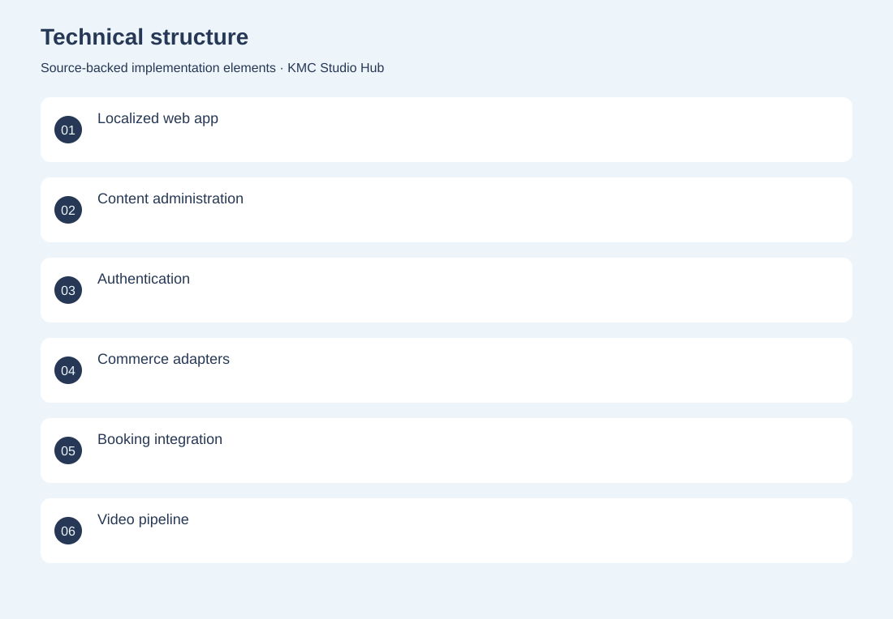
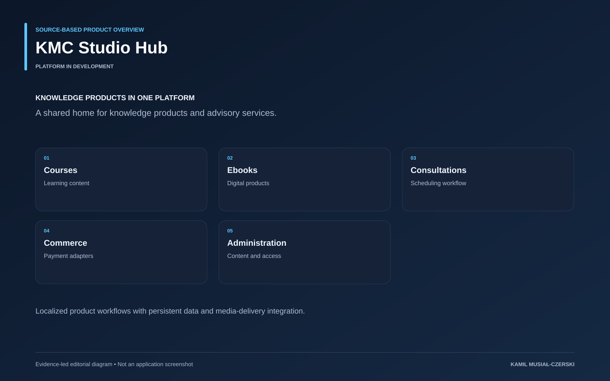

The project
The platform organizes knowledge products and advisory services around a shared account and administrative model. Localized Next.js pages connect course and ebook content to purchasing, consultation scheduling and media-delivery adapters. PostgreSQL and Prisma provide the persistent foundation, while integration boundaries keep external payment, invoicing and video services explicit.
The problem
A knowledge business needs content, access, purchasing and scheduling to work coherently.
The solution
A Next.js application brings together product content, authentication, transactional workflows and media infrastructure.
My contribution
Implemented localized product and content workflows, administrative interfaces and integrations for commerce and media delivery.
Technical structure

Product overview

The portfolio cover is an editorial illustration. No live product screenshot is presented for this project.
Showcase assets
{kind=link}
{kind=link}
New portfolio identity. Newly designed marks are portfolio treatments, not claims of official client branding.